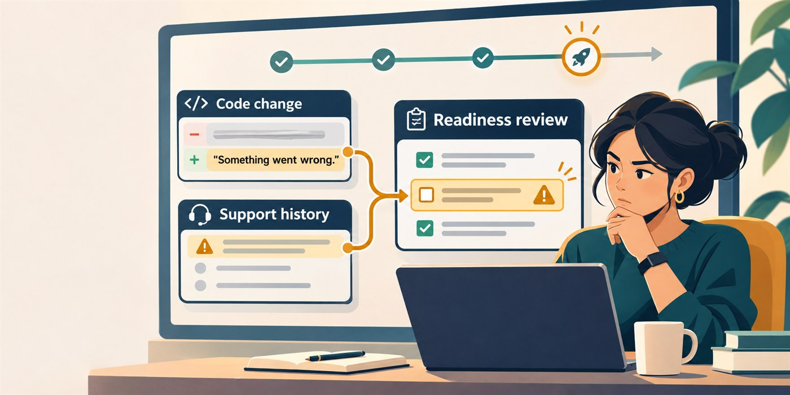
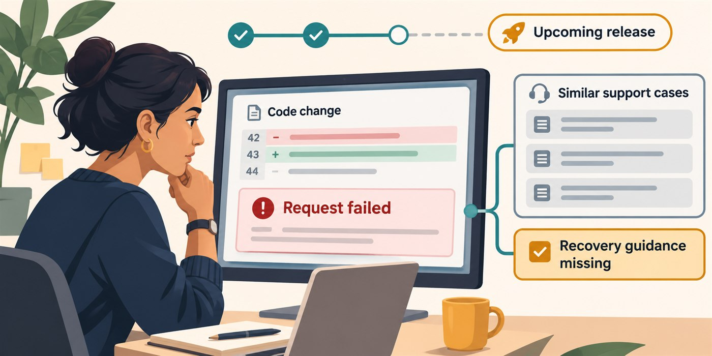

08 — AI PRODUCT CASE STUDY
Release Supportability Intelligence
Built a release assessment product that surfaces potential support gaps before launch. It connects release checklists to code changes, customer-facing errors, and historical support demand so release teams can prioritize what to fix.

THE CONTEXT
It All Started When...
A completed readiness checklist could still hide a vague error message, missing troubleshooting guidance, or unclear support ownership. Teams often found these gaps after launch because readiness reviews were disconnected from the code changes and support history for the feature.
PRODUCT OWNERSHIP
Harpreet's Role
- Owned product framing, the definition of an active release, and the roadmap with release, product, and support leaders. Defined how readiness, supportability risk, and forecast avoidable demand would be scored.
- Designed a workflow that connects releases to support topics and sends uncertain matches to the owning teams for review. Reused the error-message quality service and governed support data.
- Set a single-release pilot plan with read-only shadow runs and visible data gaps. Specified data quality checks and assessment history so teams could compare findings over time.
WHAT CHANGED
Results
- Built a way to trace an active release from its checklist to the pull requests and customer-facing messages it introduces.
- Combined message quality findings, reviewed support-topic mappings, and historical demand into an assessment that release teams can revisit across milestones.
- Added a forecast of potentially avoidable support demand to help prioritize fixes before launch. The forecast represents an opportunity estimate.
ILLUSTRATIVE OUTCOMES
Measurement example
These are synthetic portfolio examples, not actual employer results. Forecast avoidable cases are an opportunity estimate, not observed prevention.
- 27 of 36 active releaseshad a governed support-topic mapping (75%).
- 78 of 120flagged weak error messages fixed before the release milestone (65%).
- 180 casesforecast as potentially avoidable across 24 forecasted releases; this is an opportunity estimate.

EXPLORE THE FULL PROJECT
Want the complete case study?
Review the full case study and program materials in the project repository.
View complete case study & programGitHub access may be required.